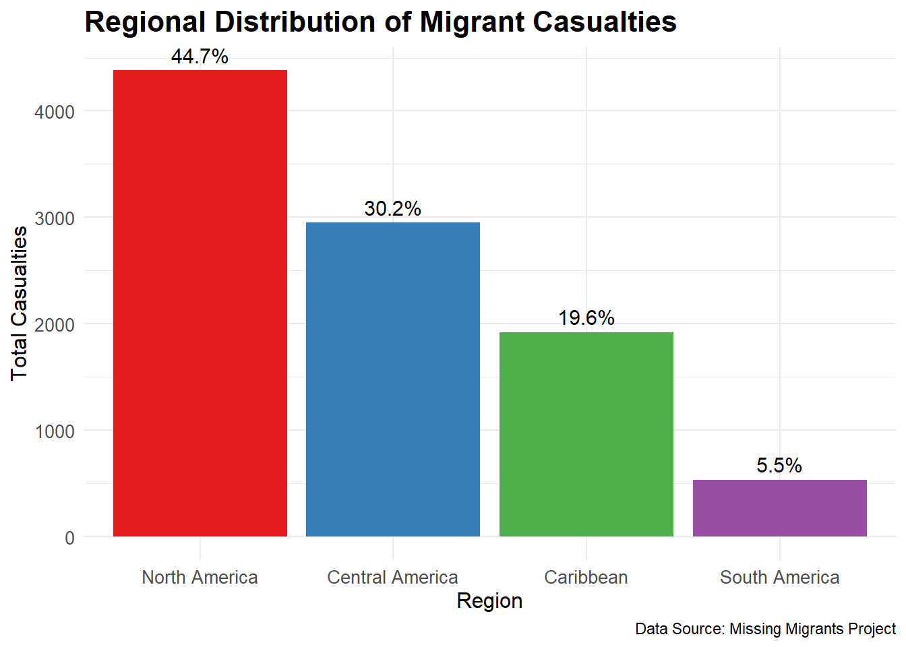
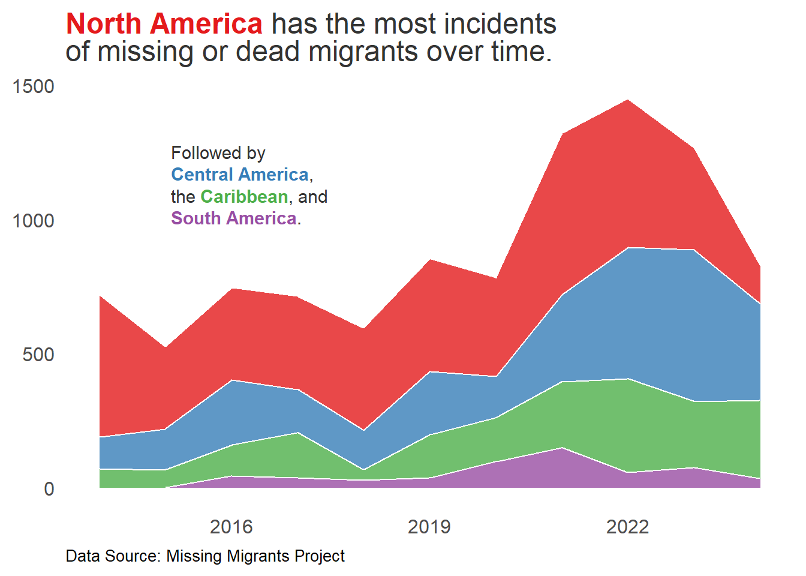

knitr::opts_chunk$set(echo = TRUE, warning = FALSE, message = FALSE)
if (interactive()) {
options(device = function() {
quartz()
})
}
library(tidyverse)
library(lubridate)
library(knitr)
library(kableExtra)
library(ggtext)
library(ggplot2)
library(dplyr)
library(sf)
library(tidyr)
library(rnaturalearth)
library(geosphere)
library(ggtext)
library(plotly)
library(leaflet)
library(htmlwidgets)The Human Cost of Migration in the Americas
# Load and process data
all_data <- read_csv("./data/Missing_Migrants_Global_Figures_allData.csv")
americas_data <- all_data %>%
separate(Coordinates, into = c("Latitude", "Longitude"), sep = ", ", convert = TRUE) %>%
filter(!is.na(Latitude) & !is.na(Longitude)) %>%
filter(`Region of Incident` %in% c("North America", "South America", "Central America", "Caribbean"))
# Define geographical bounds
lat_min <- -60 # Southernmost point in South America
lat_max <- 50 # Northernmost point in North America
lon_min <- -130 # Westernmost point in North America
lon_max <- -30 # Easternmost point in South America
americas_data <- americas_data %>%
filter(Latitude >= lat_min & Latitude <= lat_max &
Longitude >= lon_min & Longitude <= lon_max)
# Prepare map data
countries <- ne_countries(scale = "medium", returnclass = "sf") %>%
select(name, continent, geometry)
focus_regions <- c("North America", "South America", "Central America", "Caribbean")
focus_countries <- countries %>%
filter(continent %in% focus_regions)
americas_sf <- st_as_sf(americas_data, coords = c("Longitude", "Latitude"), crs = 4326)
focus_countries <- st_transform(focus_countries, 4326)
combined_data <- st_join(americas_sf, focus_countries)# Create summary statistics
casualty_summary <- americas_data %>%
mutate(Year = year(`Incident Date`)) %>%
group_by(Year) %>%
summarise(Total_Casualties = sum(`Total Number of Dead and Missing`, na.rm = TRUE)) %>%
ungroup()
# Calculate total since 2014
total_since_2014 <- sum(casualty_summary$Total_Casualties)
# Get 2024 data
casualties_2024 <- casualty_summary %>%
filter(Year == 2024) %>%
pull(Total_Casualties)
# Calculate yearly average
yearly_avg <- mean(casualty_summary$Total_Casualties)
# Create regional breakdown
regional_summary <- americas_data %>%
mutate(Year = year(`Incident Date`)) %>%
group_by(`Region of Incident`) %>%
summarise(
Total_Casualties = sum(`Total Number of Dead and Missing`, na.rm = TRUE),
Percentage = round(Total_Casualties / total_since_2014 * 100, 1)
) %>%
arrange(desc(Total_Casualties))
# Create summary tables
summary_table <- data.frame(
Time_Period = c("Total Since 2014", "2024 (Year to Date)", "Yearly Average"),
Casualties = c(total_since_2014, casualties_2024, round(yearly_avg, 0))
)
# Format the main summary table
kable(summary_table,
col.names = c("Time Period", "Total Casualties"),
caption = "Summary of Migrant Casualties in the Americas",
format = "html") %>%
kable_styling(bootstrap_options = c("striped", "hover"),
full_width = FALSE,
position = "left") %>%
column_spec(2, bold = TRUE)| Time Period | Total Casualties |
|---|---|
| Total Since 2014 | 9791 |
| 2024 (Year to Date) | 830 |
| Yearly Average | 816 |
# Format the regional breakdown table
kable(regional_summary,
col.names = c("Region", "Total Casualties", "Percentage"),
caption = "Regional Breakdown of Casualties Since 2014",
format = "html") %>%
kable_styling(bootstrap_options = c("striped", "hover"),
full_width = FALSE,
position = "left") %>%
column_spec(2:3, bold = TRUE)| Region | Total Casualties | Percentage |
|---|---|---|
| North America | 4381 | 44.7 |
| Central America | 2952 | 30.2 |
| Caribbean | 1922 | 19.6 |
| South America | 536 | 5.5 |
# Create a bar chart of regional breakdown
regional_plot <- ggplot(regional_summary, aes(x = reorder(`Region of Incident`, -Total_Casualties),
y = Total_Casualties,
fill = `Region of Incident`)) +
geom_bar(stat = "identity") +
geom_text(aes(label = paste0(Percentage, "%")),
vjust = -0.5,
size = 4) +
scale_fill_manual(values = c("North America" = "#E41A1C",
"Central America" = "#377EB8",
"Caribbean" = "#4DAF4A",
"South America" = "#984EA3")) +
labs(
title = "Regional Distribution of Migrant Casualties",
x = "Region",
y = "Total Casualties",
caption = "Data Source: Missing Migrants Project"
) +
theme_minimal() +
theme(
plot.title = element_text(size = 16, face = "bold"),
axis.title = element_text(size = 12),
axis.text = element_text(size = 10),
legend.position = "none"
)
print(regional_plot)
# Create an interactive map using leaflet
leaflet_map <- leaflet(combined_data) %>%
addTiles() %>%
setView(lng = -80, lat = 03, zoom = 2.75) %>%
addCircleMarkers(
radius = ~sqrt(`Total Number of Dead and Missing`) * 3,
color = ~case_when(
`Region of Incident` == "North America" ~ "#E41A1C",
`Region of Incident` == "Central America" ~ "#377EB8",
`Region of Incident` == "Caribbean" ~ "#4DAF4A",
`Region of Incident` == "South America" ~ "#984EA3"
),
popup = ~paste(
"<strong>Region:</strong>", `Region of Incident`,
"<br><strong>Date:</strong>", `Incident Date`,
"<br><strong>Dead/Missing:</strong>", `Total Number of Dead and Missing`,
"<br><strong>Route:</strong>", `Migration Route`
),
fillOpacity = 0.7
) %>%
addLegend(
position = "bottomright",
colors = c("#E41A1C", "#377EB8", "#4DAF4A", "#984EA3"),
labels = c("North America", "Central America", "Caribbean", "South America"),
title = "Region of Incident"
)
# Save the widget
saveWidget(leaflet_map, "map.html", selfcontained = TRUE)
leaflet_mapyearly_region_data <- americas_data %>%
mutate(Year = year(`Incident Date`)) %>%
group_by(Year, `Region of Incident`) %>%
summarise(Total = sum(`Total Number of Dead and Missing`, na.rm = TRUE), .groups = 'drop')
# Reorder based on totals
region_totals <- yearly_region_data %>%
group_by(`Region of Incident`) %>%
summarise(Total = sum(Total)) %>%
arrange(desc(Total))
yearly_region_data$`Region of Incident` <- factor(yearly_region_data$`Region of Incident`,
levels = region_totals$`Region of Incident`)
my_plot <- ggplot(yearly_region_data, aes(x = Year, y = Total, fill = `Region of Incident`)) +
geom_area(alpha = 0.8, color = "white") +
annotate(
geom = "richtext", x = 2015, y = 1300,
label = "Followed by <br> **<span style='color:#377EB8;'>Central America</span>**, <br> the **<span style='color:#4DAF4A;'>Caribbean</span>**, and <br> **<span style='color:#984EA3;'>South America</span>**.",
hjust = 0, vjust = 1, size = 4, color = "#333333",
fill = NA, label.color = NA
) +
scale_fill_manual(values = c("Caribbean" = "#4DAF4A",
"Central America" = "#377EB8",
"North America" = "#E41A1C",
"South America" = "#984EA3")) +
labs(
title = "**<span style='color:#E41A1C;'>North America</span>** has the most incidents<br>of missing or dead migrants over time.",
x = NULL,
y = NULL,
caption = "Data Source: Missing Migrants Project"
) +
theme_minimal(base_family = "Helvetica", base_size = 15) +
theme(
panel.grid.major = element_blank(),
panel.grid.minor = element_blank(),
plot.title = element_markdown(hjust=0, color = "#333333"),
plot.caption = element_text(size=10, hjust=0),
legend.position = "none"
)
# Save the plot
# ggsave("yearly_region_plot.png", my_plot, width = 8, height = 5, dpi = 300)my_plot
# Interactive Journey Map: typical migration path from Venezuela to the United States.
# Create journey data
journey_data <- data.frame(
stage = c("Origin", "First Border", "Darién Gap", "Central America", "Mexico", "US Border"),
risk_level = c(1, 2, 5, 3, 4, 5),
lat = c(10.5, 8.0, 8.5, 15.0, 19.0, 29.0),
lon = c(-66.9, -74.0, -77.5, -90.0, -99.0, -98.0),
description = c(
"Venezuela: Economic crisis forces families to leave",
"Colombia: Preparing for the dangerous jungle crossing",
"Panama: The deadly Darién Gap crossing begins",
"Guatemala: Navigating multiple borders",
"Mexico: The long journey north",
"Texas: The final, often fatal, crossing"
)
)
# Generate great circle paths between points
journey_points <- journey_data[, c("lon", "lat")]
gc_paths <- lapply(1:(nrow(journey_points)-1), function(i) {
gcIntermediate(
journey_points[i,],
journey_points[i+1,],
n = 50,
addStartEnd = TRUE,
sp = FALSE
)
})
# Create interactive journey map
journey_map <- leaflet(journey_data) %>%
addTiles() %>%
addCircleMarkers(
~lon, ~lat,
radius = ~risk_level * 5,
color = ~colorRampPalette(c("#4DAF4A", "#E41A1C"))(6)[risk_level],
popup = ~paste(
"<strong>", stage, "</strong><br>",
description, "<br>",
"Risk Level: ", risk_level, "/5"
),
opacity = 0.8
)
# Add each great circle segment
for (path in gc_paths) {
journey_map <- journey_map %>%
addPolylines(
lng = path[,1],
lat = path[,2],
color = "#666666",
weight = 2,
opacity = 0.6
)
}
# Save the widget
# saveWidget(journey_map, "journey_map.html", selfcontained = TRUE)
journey_map# Create monthly data
monthly_data <- americas_data %>%
mutate(Month = floor_date(`Incident Date`, "month")) %>%
group_by(Month) %>%
summarise(Total = sum(`Total Number of Dead and Missing`, na.rm = TRUE))
# Create interactive time series plot
p <- ggplot(monthly_data, aes(x = Month, y = Total)) +
geom_line(color = "#E41A1C") +
geom_smooth(method = "loess", se = FALSE, color = "#377EB8") +
labs(
title = "Monthly Migrant Deaths and Disappearances",
x = "Date",
y = "Number of Dead and Missing",
caption = "Data: Missing Migrants Project"
) +
theme_minimal() +
theme(
plot.title = element_text(size = 16, face = "bold"),
axis.title = element_text(size = 12),
axis.text = element_text(size = 10)
)
# Convert to interactive plot
ggplotly(p)library(htmlwidgets)
# saveWidget(ggplotly(p), "images/monthly_deaths.html", selfcontained = TRUE)